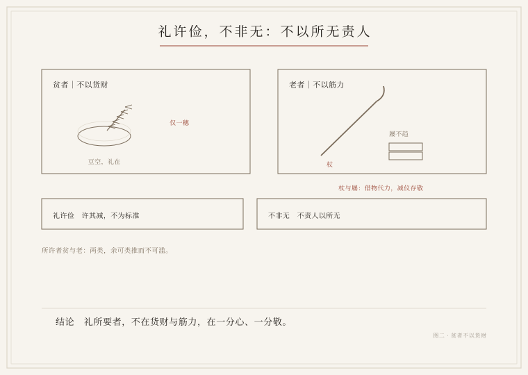

曲礼上 · 一·五十六 · 第 54 课
穷的人行礼，不必拿钱财当礼；老的人行礼，不必拿力气当礼。礼有常度，人有不齐；此节先替两种人卸下担子。
说什么事：贫者不以货财为礼，老者不以筋力为礼。
落在哪一层：教。上节讲贺辞之绕，此节讲行礼之减。
为何编在此位：一·五十五讲「辞」可绕，此节讲「礼」可许；绕是辞上的功夫，许是礼上的分寸。
【经】貧者不以貨財為禮，老者不以筋力為禮。
【注】禮許儉，不非無也。年五十始杖，八十拜君命，一坐再至。
贫者不以货财为礼 注「礼许俭」：许，准许。贫者之礼可以俭，俭非礼之正，而是礼所许的下限。
老者不以筋力为礼 注「不非无也」：非，责也。礼不责人以所无。
年五十始杖 注引常法以例之：《王制》「五十杖于家，六十杖于乡」。五十而杖，则此后的礼不以趋走为敬。
八十拜君命，一坐再至 八十不入朝，君有命则拜于家；一坐而再拜至地，不复起立周旋。
此节无疏 孔疏于「贫者」「老者」两句不别出疏，注文即其解。读者勿以无疏为阙。
穷的人行礼，不用钱财作礼；老的人行礼，不用体力作礼。
一节两句，都落在「不以」上：礼所要的，本来不是财货与筋力。若必待财货而后成礼，则贫者终身无礼；若必待筋力而后成礼，则老者终身无礼。此节把礼从「物」与「力」上解下来，归到「有」与「敬」上：有一分心，便成一分成礼。
第一层 许俭 注用「许」字，极有分寸。不说「俭即是礼」，只说「礼许俭」。俭是贫者之礼的形状，不是礼的标准。若以俭为高，则礼将日削；若不许俭，则贫者无路。许而不许为标准，是此注的分寸。
第二层 不非无 「不非无」三字，是礼的仁慈处。非，责也。礼不责人所无。这一条比「许俭」更深一层：许俭说的是「可以用少的」，不非无说的是「不可责其没有」。前者是宽容，后者是界限。
第三层 两条例证的方向 「年五十始杖」讲老者可以借物代力；「八十拜君命，一坐再至」讲老者可以把礼减到不能再减而仍不失为礼。两条都不是废礼，是改礼之形以存礼之意。
第四层 与「礼从宜」相通 一·八「礼从宜，使从俗」，讲的是礼随时地而变；此节讲的是礼随人之贫老而变。前者变其仪，后者变其力，皆不损其敬。
与今日何干 今人送礼以厚为敬，办事以到场为诚。此节可解两难：贫者不必强撑场面，老者不必强撑体力；心意到了，礼便到了。
| 左 | 右 |
|---|---|
| 贫者 | 不以货财为礼 |
| 老者 | 不以筋力为礼 |
| 礼许俭 | 许其减，不许其为标准 |
| 不非无 | 不责人以所无 |
| 年五十始杖 | 借物代力 |
| 八十拜君命，一坐再至 | 减仪而存敬 |
画一案两物并置：案左一只空豆，豆中只放一枚谷穗，豆沿干净；案右一根齐眉木杖斜倚案边，杖下放一双并拢的布鞋，鞋尖朝内。案面朴素，无余器。不画人、不写文字。赭色只在谷穗的芒与杖头。
